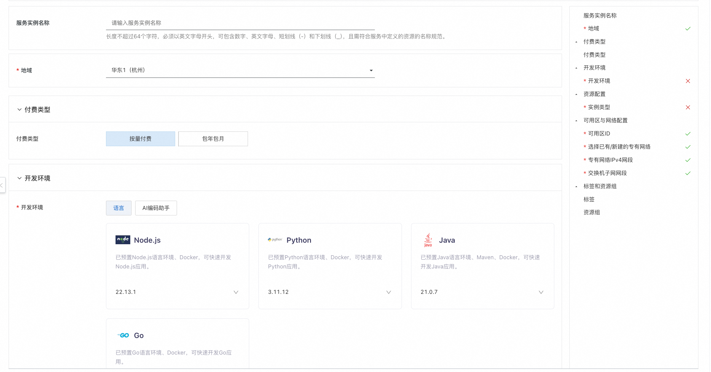
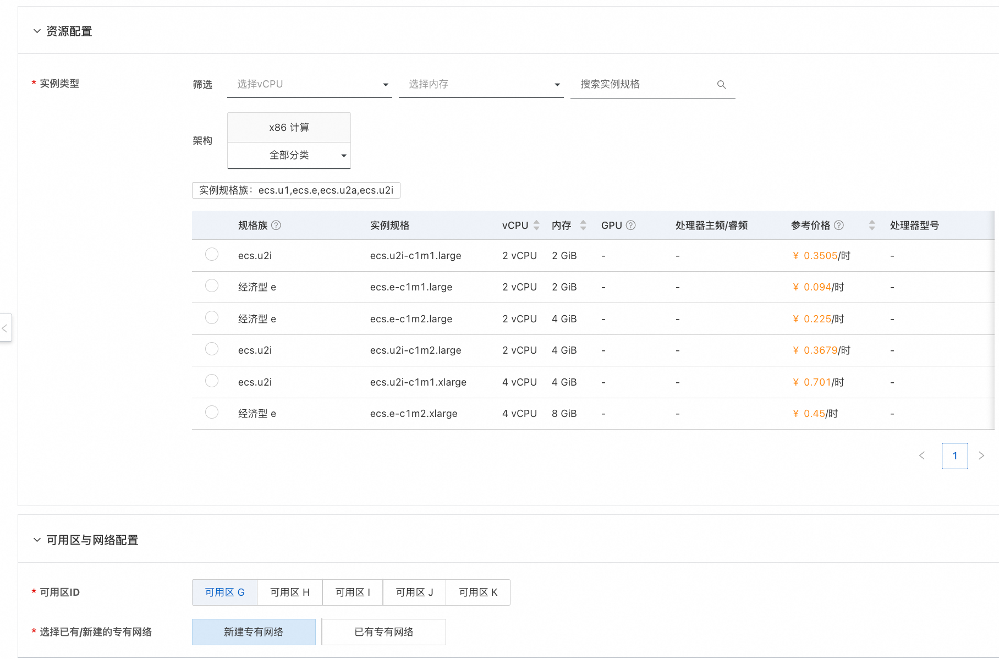
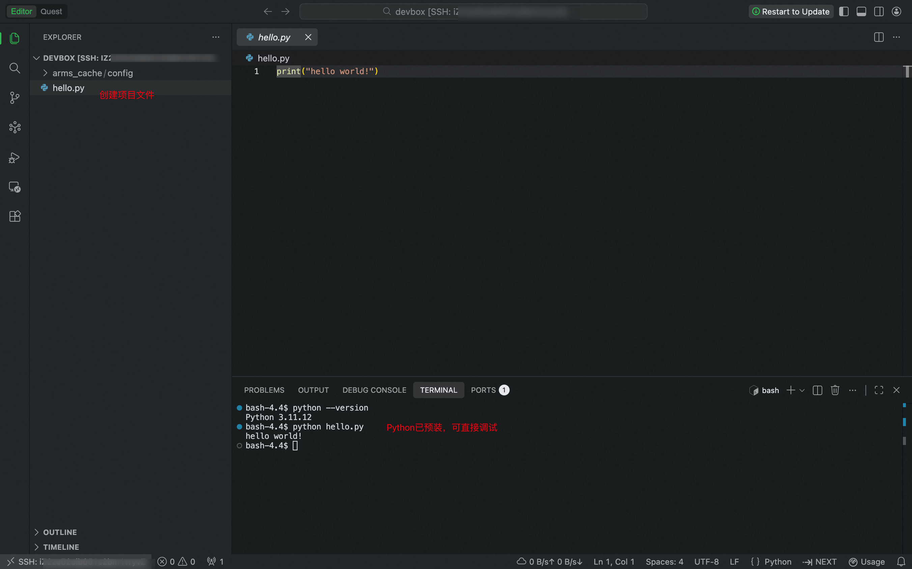

ECS Devbox 服务简介
ECS Devbox是基于ECS实例创建的快速开发环境。帮助您快速启动项目所需开发环境（如Python、Java等常用语言、框架、工具），使用熟悉的本地IDE（如VSCode）远程连接开发。
简化环境配置，专注写代码，开发即刻开始！
为什么选ECS Devbox
-
快速启动开发：快速搭建开发环境，避免本地配置依赖的繁琐过程。
-
保持开发习惯：仍使用熟悉的本地IDE开发，一键远程连接云端开发环境。
-
支持按量付费：每小时低至约0.1元，随时使用随时释放。
-
AI 辅助编程：集成opencode等AI助手，提供AI开发环境。
-
开发环境共享：团队内多人可共享Devbox，简化协作流程。
创建流程
- 访问计算巢ECS DevBox部署链接，按照页面填写部署参数：
开发环境部分提供了常用的环境，您可按照项目需要选择。（本文以Python为例）
资源配置部分，您可按需选择合适的ECS规格。


-
参数配置完成后，系统将自动生成费用预估明细。确认无误后点击 下一步：确认订单。
-
在订单确认页，核对实例信息与费用，点击 立即创建 开始自动部署。
-
部署完成后在立即使用栏获取访问地址：
您可以切换熟悉的IDE编辑器，这里以Qoder为例。（请提前安装本地IDE）

-
将访问地址复制到浏览器地址栏，点击回车。相应的本地IDE会自动启动，并连接当前DevBox。（首次连接会稍慢一些，请耐心等待）
-
连接完成后，您可以使用本地IDE开始开发。创建您的项目文件，相应的环境已经预装好。

© 2009-2022 Aliyun.com 版权所有